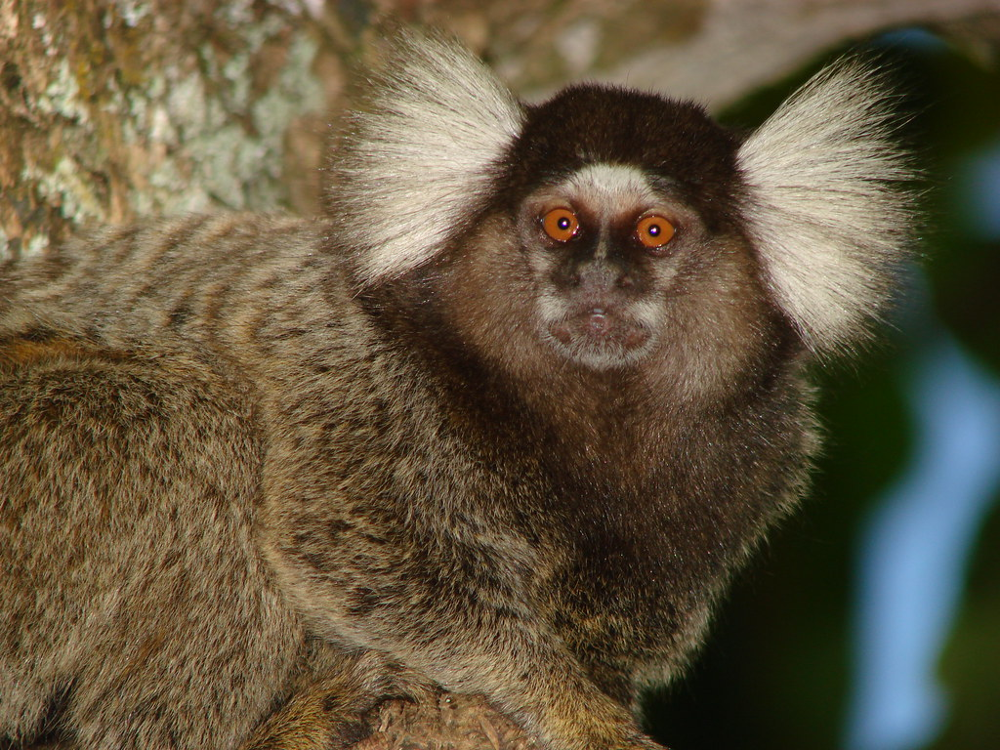
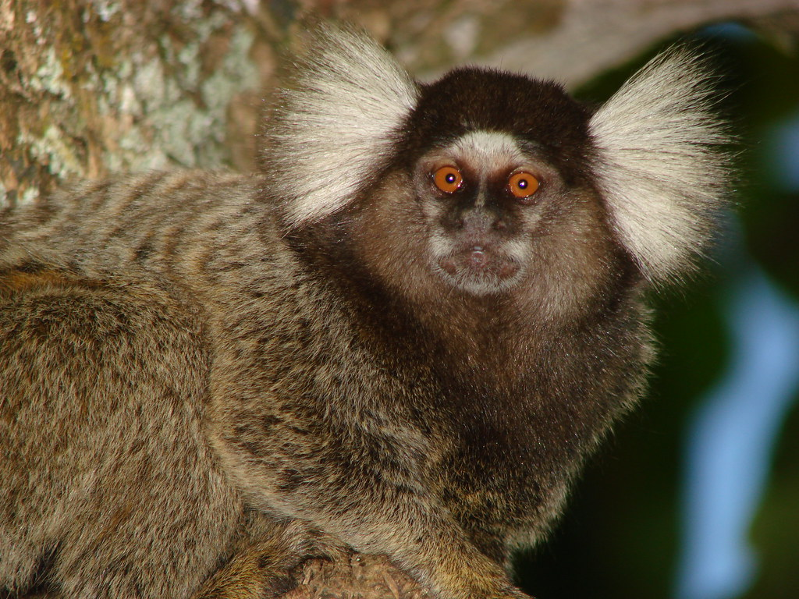

Nome Científico:Callithrix penicillata (É. Geoffroy, 1812)
Nomes Populares: Conhecido também como "mico-estrela" ou "micos-de-cabelo-de-estrela"
Classificação Biológica
Domínio: Eukaryota
Reino: Animalia
Filo: Chordata
Classe: Mammalia
Ordem: Primates
Família: Callitrichidae
Gênero: Callithrix
Espécie: C. penicillata
Nutrição Geral e Hábitos Alimentares
Tipo de Nutrição: Frugívoro e Insetívoro
O mico-estrela tem uma dieta variada que inclui frutas, insetos, flores e néctar. Eles passam grande parte do tempo forrageando nas copas das árvores e têm habilidades excepcionais para se mover através da vegetação arbórea.
Morfologia
Pelagem e Corpo O mico-estrela possui uma pelagem densa e macia, geralmente em tons de preto com marcas brancas ou amareladas na cabeça e nos ombros, criando um padrão que lembra uma estrela. Seu corpo é pequeno e ágil, ideal para a vida nas árvores. Órgãos Respiratórios Seu sistema respiratório é composto por narinas, fossas nasais, cavidade nasal, faringe, laringe, traqueia e pulmões, semelhantes aos demais primatas. Patas As patas são adaptadas para agarrar galhos e se movimentar entre as árvores, com dedos prenséis e unhas afiadas.
Comportamento
O mico-estrela é um animal social que vive em grupos familiares, geralmente compostos por um casal reprodutor e seus filhotes. Eles são muito ativos e passam grande parte do tempo brincando e socializando. Também são conhecidos por sua vocalização variada para comunicação entre os membros do grupo.
Ocorrência
O mico-estrela é encontrado em áreas de floresta tropical e subtropical do Brasil, principalmente no estado de Minas Gerais e áreas adjacentes. Prefere habitats de floresta densa e áreas de vegetação rica que oferecem uma abundante fonte de alimentos.
Mapa de Ocorrência
Reprodução
Sistema de Acasalamento: O mico-estrela forma pares monogâmicos e vive em grupos familiares estáveis. Reprodução ao Longo do Ano: A reprodução pode ocorrer durante o ano inteiro, com variações sazonais dependendo da região. Gestação: A gestação dura cerca de 140 a 150 dias. Ninhadas: As fêmeas geralmente dão à luz de 1 a 4 filhotes por ninhada. Os filhotes nascem em uma fase avançada de desenvolvimento e são cuidados por ambos os pais e membros do grupo.
 
